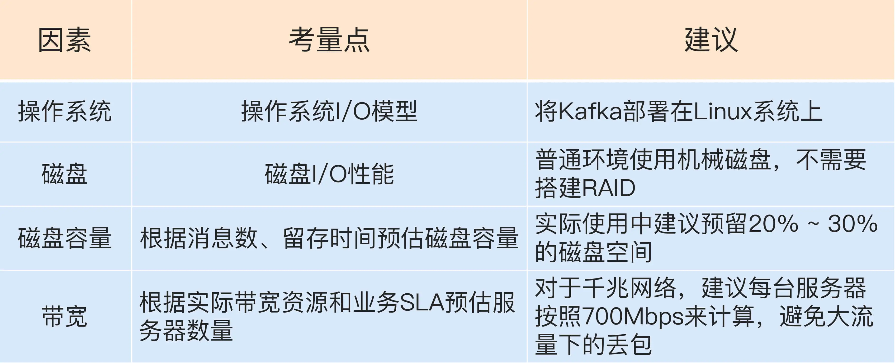
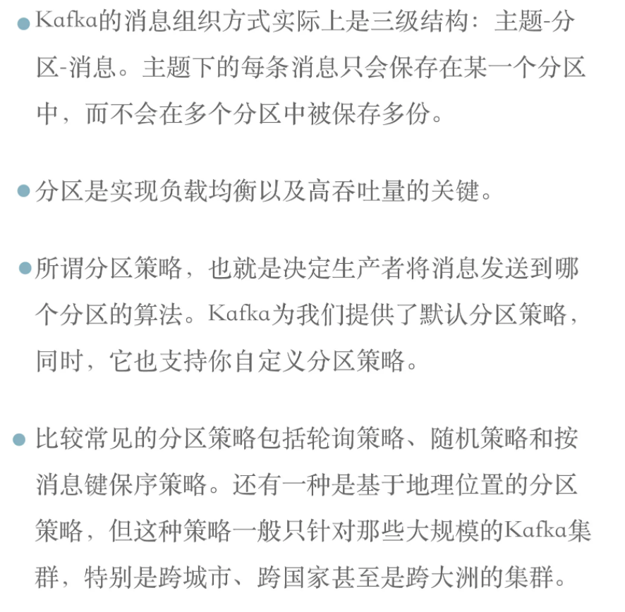
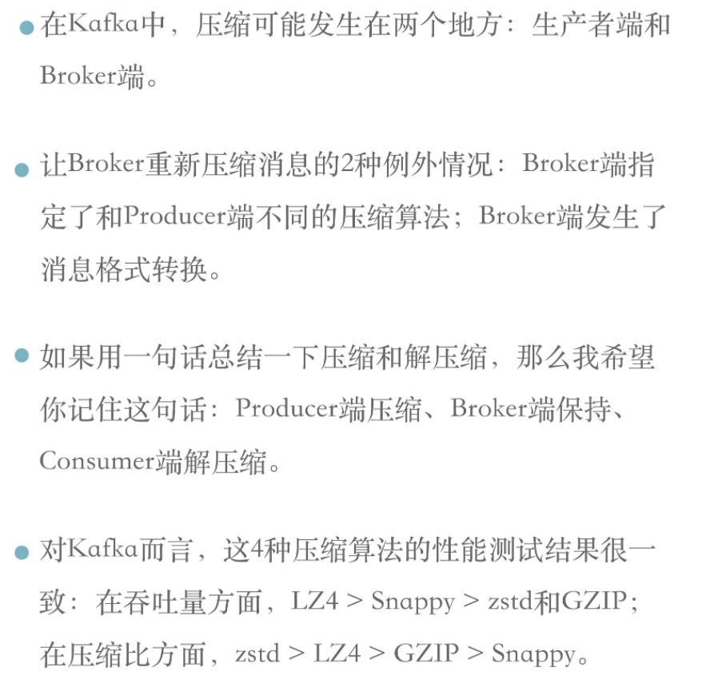
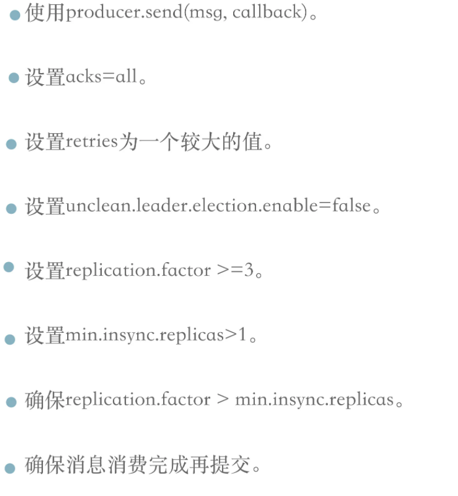
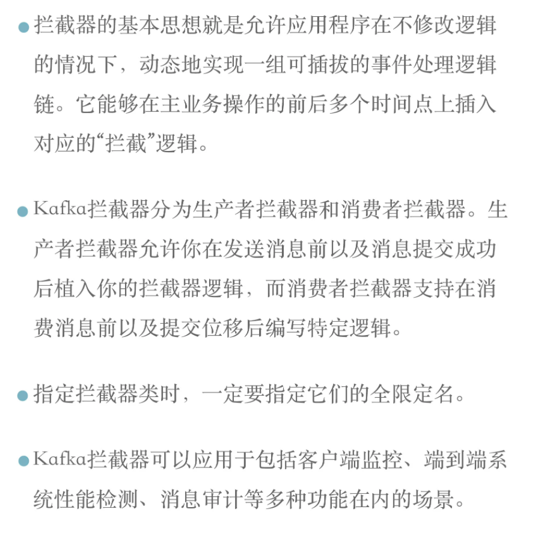
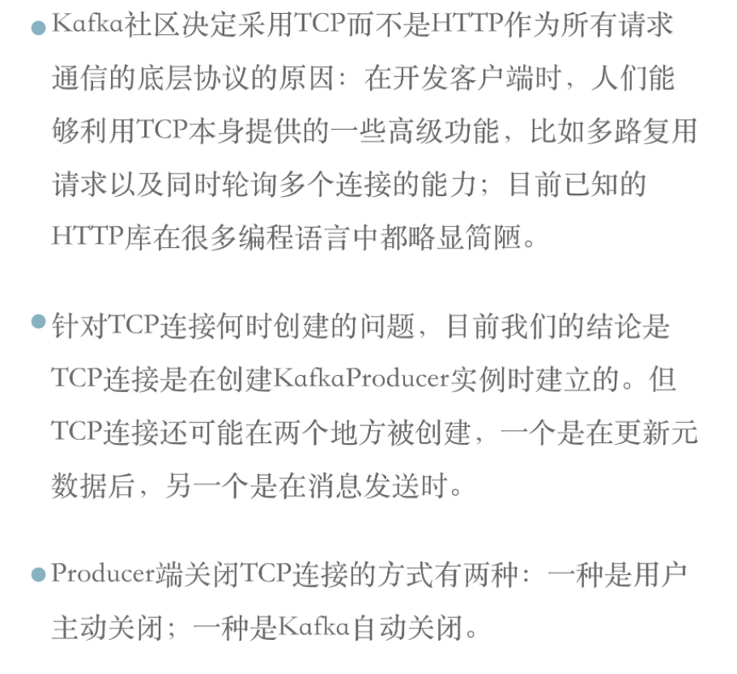
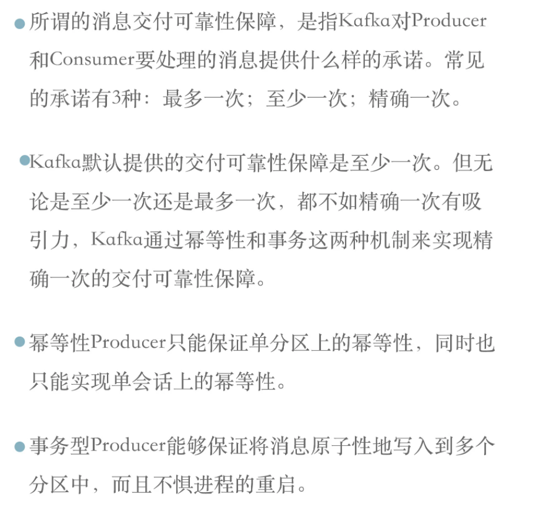
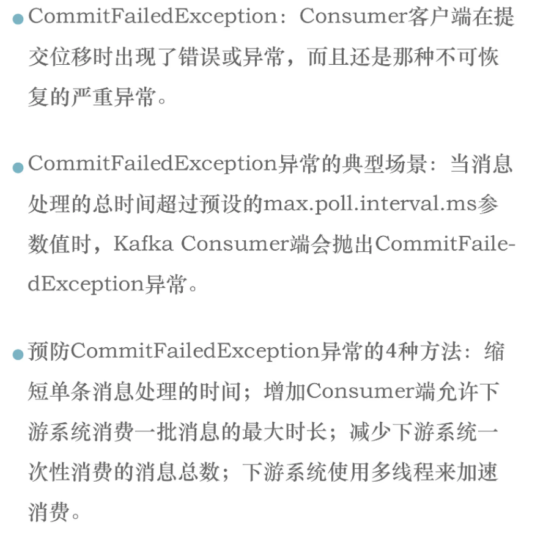
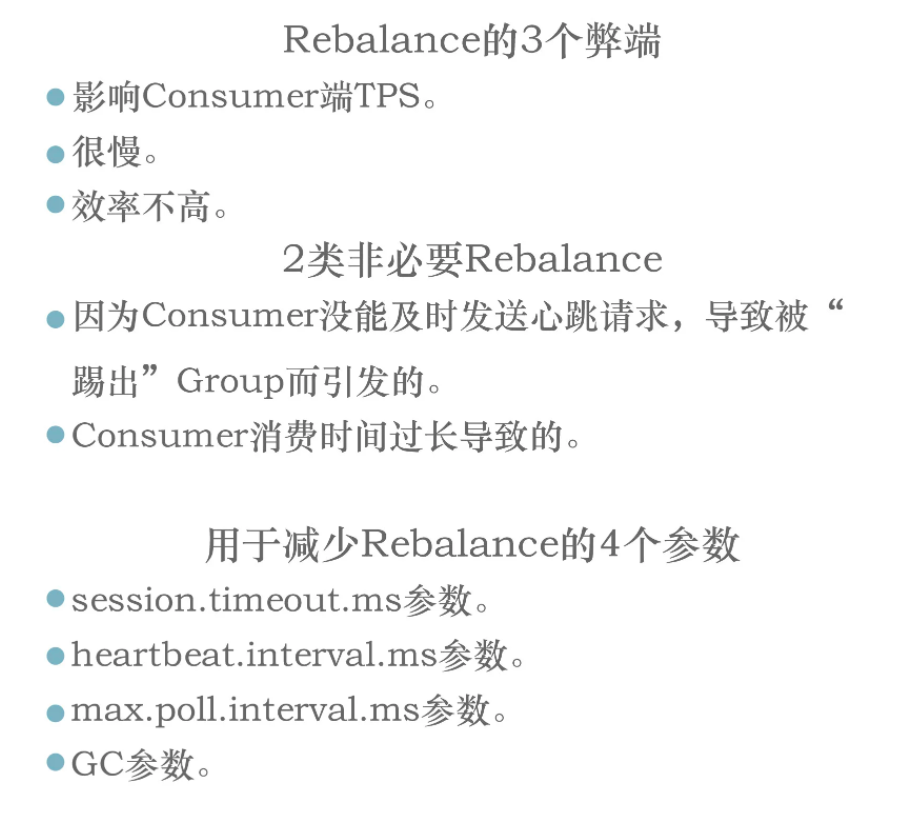
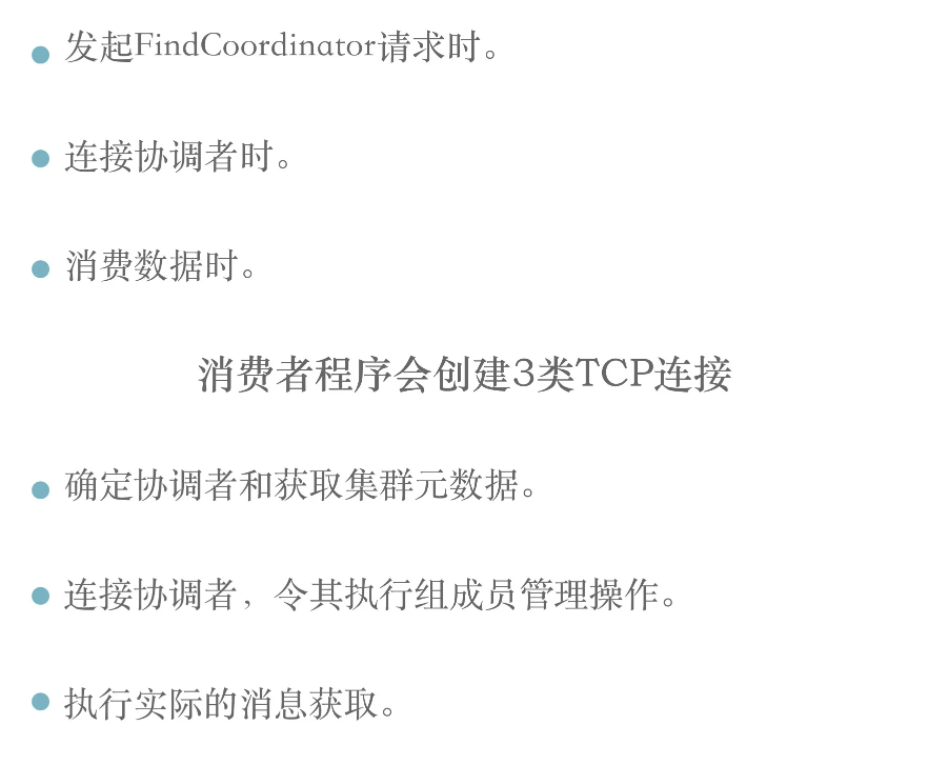

kafka从入门到入土
kafka从入门到入土
kafka中的一些术语

所有名词术语
消息：Record。Kafka 是消息引擎嘛，这里的消息就是指 Kafka 处理的主要对象。
主题：Topic。主题是承载消息的逻辑容器，在实际使用中多用来区分具体的业务。
分区：Partition。一个有序不变的消息序列。每个主题下可以有多个分区。
消息位移：Offset。表示分区中每条消息的位置信息，是一个单调递增且不变的值。
副本：Replica。Kafka 中同一条消息能够被拷贝到多个地方以提供数据冗余，这些地方就是所谓的副本。副本还分为领导者副本和追随者副本，各自有不同的角色划分。副本是在分区层级下的，即每个分区可配置多个副本实现高可用。
生产者：Producer。向主题发布新消息的应用程序。
消费者：Consumer。从主题订阅新消息的应用程序。
消费者位移：Consumer Offset。表征消费者消费进度，每个消费者都有自己的消费者位移。
消费者组：Consumer Group。多个消费者实例共同组成的一个组，同时消费多个分区以实现高吞吐。
重平衡：Rebalance。消费者组内某个消费者实例挂掉后，其他消费者实例自动重新分配订阅主题分区的过程。Rebalance 是 Kafka 消费者端实现高可用的重要手段。
kafka的三层消息架构
- 第一层：主题层（topic）
- 每个topic可以配置M的分区（partition），而每个分区又可以配置N个副本（Replica）
- 第二层：分区层（partition）
- 每个分区的N个副本中，只能有一个充当领导者（leader），leader对外提供服务；
- 剩下的N-1个副本，都是作为追随者（follower），follower只是作为数据冗余；
- 第三层：消息层
- 分区中包含若干消息，每个消息的位移（offset）都是从0开始，依次递增；
kafka是如何持久化数据的
kafka使用消息日志（Log）来保存数据，一个日志就是磁盘上一个只能追加写消息的物理文件。
一个消息日志（Log）包含了多个日志段（Log Segment）,消息其实是被追加写到最新的日志段中（Log Segment）的；
当写满一个日志段中（Log Segment）的时候，会自动切分一个新的日志段中（Log Segment），老的日志段中（Log Segment）就会被封存；
kafka会有一个定时任务，定期检查老的日志段中（Log Segment）是否能够被删除，从而释放磁盘空间；
两种消息模型
点对点（peer to peer）
- 同一个消息只能被下游的一个消费者消费；
- kafka为了实现点对点，引入了消费者组（Consumer Group）的概念
发布订阅模型（pub/sub）：
消费者组
kafka为了实现点对点（同一个消息只能被下游的一个消费者消费），引入了消费者组（Consumer Group）的概念；
消费者组：多个消费者实例组成一组消费某一个topic，这个topic下的一条消息只能被组中的一个消费者实例消费；
为什么要引入消费者组
为了提升吞吐量，假设topic的消息的生产速率不变，增加消费者实例，就可以提升吞吐量；
重平衡
当组内的某一个消费者实例挂了，kafka会自动重平衡；将这个死亡的消费者实例原先消费的分区，转移给存活的消费者实例；
消费者位移（Consumer Offset）和分区位移（Offset）
消费者位移：消费者位移是随时变化的，毕竟它是消费者消费进度的指示器嘛。
分区位移：表征的是分区内的消息位置，它是不变的，即一旦消息被成功写入到一个分区上，它的位移值就是固定的了。
举个例子：
一个消息发送到kafka集群，kafka就会给这个消息并一个编号，这个编号就是“分区位移”；而且这个“分区位移”是固定不变的；
当有消费者消费的时候，消费者会记录我自己消费到了哪里，这个就是消费者位移；（消息者位移其实并不是记录在消费者端的，而是记录在zk或者kafka中的）；
kafka的发展历史和定位
kakka既是一个消息引擎系统，同时又是一个分布式流处理平台；
kafka的发展历史
是Linkedln公司内部的孵化项目。
Linkedln一开始是有 数据强实时性处理方面的需求，用了activeMq，但不理想，所以准备自己搞一套。
Kafka 自诞生伊始是以消息引擎系统的面目出现在大众视野中的。如果翻看 0.10.0.0 之前的官网说明，你会发现 Kafka 社区将其清晰地定位为一个分布式、分区化且带备份功能的提交日志（Commit Log）服务。
kafka在设计之初提供三个方面的特性：
- 提供一套 API 实现生产者和消费者；
- 降低网络传输和磁盘存储开销；
- 实现高伸缩性架构。
后来用的人越来越多，kafka思考引入了流处理；
Kafka 社区于 0.10.0.0 版本正式推出了流处理组件 Kafka Streams，也正是从这个版本开始，Kafka 正式“变身”为分布式的流处理平台，而不仅仅是消息引擎系统了。
kafka与其他的流处理框架的优点
- 第一点是更容易实现端到端的正确性（Correctness）
- kafka自己对于流式计算的定位
kafka的定位
- 消息引擎系统
- 流处理平台
- 分布式存储系统（很少）
kafka版本
kafka发行版本
kafka存在多个不同的发行版本，类似linux系统中的centos，redhat，ununtu等；
| 类型 | 描述 | 优点 | 缺点 | 选择 |
|---|---|---|---|---|
| apache kafka | Apache Kafka 是最“正宗”的 Kafka，是我们学习和使用 Kafka 的基础。 | 优势在于迭代速度快，社区响应度高，使用它可以让你有更高的把控度 | 缺陷在于仅提供基础核心组件，缺失一些高级的特性。 | 如果你仅仅需要一个消息引擎系统亦或是简单的流处理应用场景，同时需要对系统有较大把控度，那么我推荐你使用 Apache Kafka。 |
| Confluent Kafka | Confluent 公司：2014 年，Kafka 的 3 个创始人 Jay Kreps、Naha Narkhede 和饶军离开 LinkedIn 创办了 Confluent 公司，专注于提供基于 Kafka 的企业级流处理解决方案。Confluent Kafka 提供了一些 Apache Kafka 没有的高级特性，比如跨数据中心备份、Schema 注册中心以及集群监控工具等。 | 优势在于集成了很多高级特性且由 Kafka 原班人马打造，质量上有保证； | 缺陷在于相关文档资料不全，普及率较低，没有太多可供参考的范例。 | 如果你需要用到 Kafka 的一些高级特性，那么推荐你使用 Confluent Kafka。 |
| CDH Kafka / HDP Kafka | Cloudera 提供的 CDH 和 Hortonworks 提供的 HDP 是非常著名的大数据平台，里面集成了目前主流的大数据框架，能够帮助用户实现从分布式存储、集群调度、流处理到机器学习、实时数据库等全方位的数据处理，不管是 CDH 还是 HDP 里面都集成了 Apache Kafka，因此我把这两款产品中的 Kafka 称为 CDH Kafka 和 HDP Kafka。 | 操作简单，节省运维成本 | 把控度低，演进速度较慢。 | 如果你需要快速地搭建消息引擎系统，或者你需要搭建的是多框架构成的数据平台且 Kafka 只是其中一个组件，那么我推荐你使用这些大数据云公司提供的 Kafka。 |
apache kafka版本号
在官网上下载 Kafka 时，会看到这样的版本：

有些人会误将Scala版本看作是Kafka版本，那么就来解释一下这个版本号
2.11/2.12：代表着Kafka源代码的Scala编译器版本
2.3.0：才是Kafka的版本号，2代表着大版本号；3代表着小版本号；0代表着修订版本号或补丁
版本号演进
Kafka目前经历了7个大版本，0.7、0.8、0.9、0.10、0.11、1.0和2.0，其中小版本与Patch版本很多就不一一列举
在上面的7个大版本中，在哪个版本进行了重大的改进，来好好看一下

0.7版本
这是个“上古”版本，只提供了基础的消息队列功能，还没有提供副本机制
0.8版本
正式引入了副本机制，能够比较好地做到消息无丢失，新版本Producer API不稳定
0.9版本
添加了基础的安全认证/权限；新版本Producer API在这个版本中算比较稳定，但是0.9版的Consumer API BUG超多，即使提到社区也不会有人管，所以千万别用！
0.10版本
是里程碑式的大版本，因为该版本引入了Kafka Streams，但还不能生产大规模部署使用，自0.10.2.2版本起，新版本Consumer API算是比较稳定了
0.11版本
引入了两个重量级的功能变更：一个是提供幂等性Producer API以及事务（Transaction） API；另一个是对Kafka消息格式做了重构
Producer实现幂等性以及支持事务都是Kafka实现流处理结果正确性的基石，由于刚推出，事务API有一些Bug，另外事务API主要是为Kafka Streams应用服务的，不建议用
这个版本中各个大功能组件都变得非常稳定了，国内该版本的用户也很多，应该算是目前最主流的版本之一了
如果你对1.0版本是否适用于线上环境依然感到困惑，那么至少将你的环境升级到0.11.0.3，因为这个版本的消息引擎功能已经非常完善了
1.0/2.0版本
合并说下1.0和2.0版本吧，因为这两个大版本主要还是Kafka Streams的各种改进，在消息引擎方面并未引入太多的重大功能特性
Kafka Streams的确在这两个版本有着非常大的变化，也必须承认Kafka Streams目前依然还在积极地发展着，如果你是Kafka Streams的用户，至少选择2.0.0版本吧
建议
不论你用的是哪个版本，都请尽量保持服务器端版本和客户端版本一致，否则你将损失很多Kafka为你提供的性能优化收益
kafka线上集群部署方案怎么做
操作系统的选择
操作系统：Windows，Linux，MacOs
选择：Linux
IO模型的使用
- 阻塞IO
- 非阻塞IO
- IO多路复用
- 信号驱动IO
- 异步IO
每种IO都有自己的典型使用场景，比如：
- Java中的Socket对象的阻塞模式和非阻塞模式就是对应前两种；
- Linux系统的select函数就属于IO多路复用
- 大名鼎鼎的epoll介入第三种和第四种之间；
- 第五种模型，目前很少有Linux支持，然而Windos却在操作系统中提供了叫IOCP线程模型属于第五种
说完了IO模型，再来看kafka与IO模型的关系
- kafka的底层使用的是java的selector
- java的selector在linux上的实现机制是：epoll
- 而在windos上的实现机制是：select（IO多路复用）
- 所以，将kafka部署在linux机器上，更有优势
网络传输效率
kafka的消息是通过网络传输的，而消息又是保存在磁盘中的，所以kafka非常依赖网络和磁盘的性能；
而linux恰巧有零拷贝（Zero copy）技术，就是当数据在磁盘和网络进行传输的时候，避免昂贵的的内核态数据拷贝从而实现数据的高速传输；
而windos要到java8的60更新版本才有这个功能；
社区的支持度
社区对于windos版的bug不做承诺，基本不会修复；
磁盘的选择
- 选择机械磁盘：kafka多为顺序读写，规避了机械磁盘的弊端，替换成SSD，效益不大
- 不用组RAID：kafka在软件层面通过分区副本保证了高可用，基本不需要磁盘组RAID
磁盘容量的选择
磁盘容量：kafka的日志有保留时间的概念，根据具体的业务量，消息大小，计算好容量；
新增消息量
消息留存时间
平均消息大小
备份数
是否启用压缩（压缩比）
带宽的选择
目前公司普遍的带宽配置都是千兆网（每秒处理1G数据），财大气粗的公司会有万兆网（每秒处理10G数据）；
假设你公司的机房环境是千兆网络，即 1Gbps，现在你有个业务，其业务目标或 SLA 是在 1 小时内处理 1TB 的业务数据。那么问题来了，你到底需要多少台 Kafka 服务器来完成这个业务呢？
千兆网络下，单台机器，假设kafka占用70%的带宽（总要为其他进程保留一些资源），稍等，这只是它能使用的最大带宽资源，你不能让 Kafka 服务器常规性使用这么多资源，故通常要再额外预留出 2/3 的资源，即单台服务器使用带宽 700Mb / 3 ≈ 240Mbps。有了 240Mbps，我们就可以计算 1 小时内处理 1TB 数据所需的服务器数量了。根据这个目标，我们每秒需要处理 2336Mb 的数据，除以 240，约等于 10 台服务器。如果消息还需要额外复制两份，那么总的服务器台数还要乘以 3，即 30 台。
重要的集群参数配置
参数配置分为四个方面：
- broker端参数配置
- topic的参数配置
- JVM的参数配置
- 操作系统的参数配置
broker端参数（静态参数）
静态参数是指修改后需要重启才能生效的参数
存储信息类参数
| 参数 | 描述 |
|---|---|
| log.dirs | 【必须指定】指定Broker需要使用的若干个文件目录路径，可配置多个 |
| log.dir | 只能配置一个，用来补充上面参数的 |
与ZK相关的参数
| 参数 | 描述 |
|---|---|
| zookeeper.connect | 负责协调管理并保存 Kafka 集群的所有元数据信息，比如集群都有哪些 Broker 在运行、创建了哪些 Topic，每个 Topic 都有多少分区以及这些分区的 Leader 副本都在哪些机器上等信息。 |
Broker连接相关的参数
| 参数 | 描述 |
|---|---|
| listeners | 告诉外部连接需要通过什么协议访问指定主机名和端口开放的kafka服务（用于内网访问） |
| Advertised.listeners | 表明这组监听器是broker对外发布的（用于外网访问） |
| host.name/port | 这俩参数是过期参数，忘掉 |
topic管理的参数
| 参数 | 描述 |
|---|---|
| auto.create.topics.enable | 是否允许自动创建topic， 建议设置成false； |
| unclean.leader.election.enable | 是否允许Unclean Leader选举， 建议设置为false； kafka的分区有多个副本，并不是所有的副本都有资格竞争Leader，只有保存数据比较多的才有资格；那如果保存数据比较多的副本全都挂了，那还要不要竞选Leader呢？ 就是这个参数控制的； false表示不竞选，后果分区不可用； true表示竞选；后果数据不一致； |
| auto.leader.rebalance.enable | 是否允许定期进行Leader选举；true表示到达一定条件，kafka会自动把leader换了，注意是换掉，而不是选举；即使原来的leaderA运行的好好地，也会给换成leaderB；换leader的代价很大，建议设置为false； |
数据留存方面的参数
| 参数 | 描述 |
|---|---|
| log.retention.{hour|minutes|ms} | 控制一条消息被保留多长时间 |
| log.retention.bytes | Broker为保留消息提供的磁盘容量的大小 |
| message.max.bytes | 控制Broker能够接收的最大的消息大小 |
Topic的参数配置
topic端的参数配置会覆盖broker端的参数配置
数据留存方面的参数
| 参数 | 描述 |
|---|---|
| retention.ms | 规定了该topic下数据的保存时长，默认7天，如果配置了，就会覆盖broker端的配置 |
| retention.bytes | 规定了要为该topic预留多少磁盘容量空间 |
| max.message.bytes | 该参数跟 message.max.bytes 参数的作用是一样的，只不过 max.message.bytes 是作用于某个 topic，而 message.max.bytes 是作用于全局。 |
怎么修改topic的参数配置
创建topic的时候设置
bin/kafka-topics.sh –bootstrap-server localhost:9092 –create –topic transaction –partitions 1 –replication-factor 1 –config retention.ms=15552000000 –config max.message.bytes=5242880
修改topic的时候设置
bin/kafka-configs.sh –zookeeper localhost:2181 –entity-type topics –entity-name transaction –alter –add-config max.message.bytes=10485760
JVM的参数配置
| 参数 | 描述 |
|---|---|
| JVM堆大小 | 建议设置为6GB，默认的1GB太小了 |
| 垃圾回收设置（java7） | cpu充足，就用CMS；否则使用ParallelGC |
| 垃圾回收设置（java8） | G1 |
怎么对kafka设置JVM参数
指定kafka的环境变量即可
- KAFKA_HEAP_OPTS：指定堆大小
- KAFKA_JVM_PERFORMANCE_OPTS：指定垃圾回收器
$> export KAFKA_HEAP_OPTS=--Xms6g --Xmx6g
$> export KAFKA_JVM_PERFORMANCE_OPTS= -server -XX:+UseG1GC -XX:MaxGCPauseMillis=20 -XX:InitiatingHeapOccupancyPercent=35 -XX:+ExplicitGCInvokesConcurrent -Djava.awt.headless=true
$> bin/kafka-server-start.sh config/server.properties操作系统的参数配置
| 参数 | 描述 |
|---|---|
| 文件描述符限制 | ulimit -n；其实设置这个参数不重要，但是不设置后果很严重，会看到too many open file 的报错； |
| 文件系统类型 | 文件系统类型（ext3，ext4，XFS），XFS的性能强于ext4，ZFS的性能强于XFS（但技术比较新，使用很少） |
| Swappiness | 网上很多文章都提到设置其为 0，将 swap 完全禁掉以防止 Kafka 进程使用 swap 空间。我个人反倒觉得还是不要设置成 0 比较好，我们可以设置成一个较小的值。为什么呢？因为一旦设置成 0，当物理内存耗尽时，操作系统会触发 OOM killer 这个组件，它会随机挑选一个进程然后 kill 掉，即根本不给用户任何的预警。但如果设置成一个比较小的值，当开始使用 swap 空间时，你至少能够观测到 Broker 性能开始出现急剧下降，从而给你进一步调优和诊断问题的时间。基于这个考虑，我个人建议将 swappniess 配置成一个接近 0 但不为 0 的值，比如 1。 |
| 提交时间（系统的刷盘时间） | 提交时间或者说是 Flush 落盘时间。向 Kafka 发送数据并不是真要等数据被写入磁盘才会认为成功，而是只要数据被写入到操作系统的页缓存（Page Cache）上就可以了，随后操作系统根据 LRU 算法会定期将页缓存上的“脏”数据落盘到物理磁盘上。这个定期就是由提交时间来确定的，默认是 5 秒。一般情况下我们会认为这个时间太频繁了，可以适当地增加提交间隔来降低物理磁盘的写操作。当然你可能会有这样的疑问：如果在页缓存中的数据在写入到磁盘前机器宕机了，那岂不是数据就丢失了。的确，这种情况数据确实就丢失了，但鉴于 Kafka 在软件层面已经提供了多副本的冗余机制，因此这里稍微拉大提交间隔去换取性能还是一个合理的做法。 |
大数据量均匀分布Broker（分区原理）
对于那种大批量机器组成的集群环境，每分钟产生的日志量都能以 GB 数，因此如何将这么大的数据量均匀地分配到 Kafka 的各个 Broker 上，就成为一个非常重要的问题。
我们知道kafka的数据，是以topic为概念进行存储的，而topic是一个逻辑概念，真正存放数据的是topic下的partition；partition是物理概念；
那么，为了保证大数据量的均匀分布，其实就是保证一个topic下的数据量均匀的分散在各个partition中；
那么问题来了？
kafka为什么要分区
kafka为什么要分区，为什么kafka不直接存储数据，而是要分区存储？为什么要使用分区的概念，而不是直接使用topic？
分区的目的是为了负载均衡；或者说分区的目的是为了提高系统的可伸缩性；
- 负载均衡
- 如果没有分区，所有的请求全部在一个topic上，请求量大的时候，直接就崩了；
- 可伸缩性
- 顺丰的kafka一般是32分区，这样每一个分区都可以有一个consumer，提升系统的吞吐量；当数据量增长的时候，可以扩分区，32->64；提升系统的可伸缩性；
- 但是一般不建议直接扩分区，在顺丰，一般是申请新的topic，然后将消息转发到不同的topic中，变相的实现扩分区；
- 因为分区过多，kafka管理起来很困难，没必要增加不必要的消耗；
- 分区可以实现业务上的功能（消息的顺序问题）
以上说了分区存在的必要性，那么既然存在分区，怎么保证每个分区的数据量的均匀呢？这就涉及到分区的策略
都有哪些分区策略
分区策略：就是决定消息被发送到哪个分区
| 分区策略 | 描述 |
|---|---|
| 轮训 | 没有指定partitioner.class这个配置的时候，在没有指定key的时候（消息键保留策略），轮训策略是默认的 |
| 随机 | 使用的很少了，已经被废弃了 |
| 自定义 | 需要显示的配置partitioner.class这个配置，同时需要编写代码； |
| 按消息键保留策略 | 按照key的顺序进行存放，kafka默认分区策略：如果指定了key，按照key分发；没有指定key，按照轮训； |
生产者压缩算法（消息格式）
为什么要压缩？
说起压缩（compression），我相信你一定不会感到陌生。它秉承了用时间去换空间的经典 trade-off 思想，具体来说就是用 CPU 时间去换磁盘空间或网络 I/O 传输量，希望以较小的 CPU 开销带来更少的磁盘占用或更少的网络 I/O 传输。在 Kafka 中，压缩也是用来做这件事的。
怎么压缩
kafka的消息格式
kafka有两大类消息格式，一类是在0.11.0.0版本之前的消息格式（称作V1版本），一个是0.11.0.0版本之后的格式（称作V2版本）；
不管是哪个版本，kafka消息层次都是分为两层：
| V1版本 | V2版本 |
|---|---|
| 消息集合（message set） + 消息（message） | 消息集合（record batch） + 消息（record） |
一个消息集合中包含若干个日志项（record item），日志项（record item）才是真正封装消息的地方；
V2版本对V1版本进行了优化，将日志项（record item）中一些通用的字段抽出来，放在了消息集合中；
V2版本对V1版本还有一个关于压缩方面的优化
怎么压缩
V2版本对V1版本还有一个关于压缩方面的优化，就是V1版本的压缩方法是把多条消息进行压缩，然后将压缩后的内容放在外层消息的消息体字段中；V2版本则是对整个消息集合进行压缩，显然V2版本的压缩效率应该更高；
何时压缩
在kafka中，压缩可能发生在：生产者端和Broker端
生产者【一般都是生产者端做压缩】
- 在生产者程序中添加一个配置：compression.type 参数； compression.type=gzip表示开启gzip压缩
Broker端
- 一般Broker端不会对生产者发出来的消息进行修改；有两个例外情况，会让Broker对消息重新压缩
- Broker端和生产者端指定的消息压缩算法不一致（不一致的时候，broker端会对producer发出来的消息解压然后重新压缩）
- Broker端发生了消息格式转换：kafka新老版本兼容的问题
- 一般Broker端不会对生产者发出来的消息进行修改；有两个例外情况，会让Broker对消息重新压缩
何时解压缩
- consumer端消费到消息的时候，进行解压缩
- 解压缩的时候，压缩算法是在消息中，用一个字段标识的，所以consumer可以拿到消息之后在解压缩
- broker端收到producer发出的消息之后，也会解压缩一次，进行消息的校验；
压缩算法的选择
一般看两个指标：压缩比 和 压缩/解压缩的吞吐量
GZIP
Snappy
LZ4
zstd
怎么保证消息不丢失
kafka只对 已提交（commited message） 的消息做有限度的持久化保证；
什么是消息丢失
对于生产者来说：消息发不出去，就是丢失；
对于消费者来说：消息消费不到，就是丢失；
对于broker来说：不存在丢失，broker会对 已提交成功 的消息，做有限度的持久化；
什么时候会消息丢失
生产者程序丢失消息
- producer.send(msg)因为是异步，
fire and forget所以可能会丢消息- 网络抖动、消息不合法被broker拒收（消息体太大）等都会导致消息发送不成功
- 解决：不要使用producer.send(msg) ，使用producer.send(msg,callback)；使用带回调的方式
- producer.send(msg)因为是异步，
消费者程序丢失消息
- 消费的消息不存在了。一般只有先提交offset在消费的场景下会发生；
- 多线程处理消息的时候，某一个线程消费失败了，但是offset自动提交了；
怎么保证消息不丢失
上面几种丢失消息的场景，怎么避免？
- 【生产者端】：用 producer.send(msg, callback)发消息
- 【broker端】：设置 acks = all
- 【生产者端】：设置 retries 为一个较大的值，producer发送失败后重试的次数
- 【broker端】：设置 unclean.leader.election.enable = false
- 【broker端】：设置 replication.factor >= 3，设置分区的副本数
- 【broker端】：设置 min.insync.replicas > 1。表示消息至少要被写入到多少个副本才算是“已提交”
- 【broker端】：确保 replication.factor > min.insync.replicas；推荐replication.factor = min.insync.replicas + 1。
- 【消费者端】：设置enable.auto.commit= false，采用手动提交位移的方式
acks 和 replication.refactor 和 min.insync.replicas 区别：
replication.refactor是某个分区的副本replica总数；
min.insync.replicas是要求确保至少有多少个replica副本写入后才算是提交成功，这个参数是个硬指标；
acks=all是个动态指标，确保当前能正常工作的replica副本都写入后才算是提交成功。
举个例子：比如，此时副本数3，设置min.insync.replicas=2，acks=all，那如果所有副本都正常工作，消息要都写入3个副本，才算提交成功，此时这个min.insync.replicas=2下限值不起作用。如果其中一个副本因为某些原因挂了，此时acks=all的动态约束就是写入2个副本即可，触达了min.insync.replicas=2这个下限约束。如果三个副本挂了两个，此时ack=all的约束就变成了1个副本，但是因为有min.insync.replicas=2这个下限约束，写入就会不成功。
kafka的拦截器
生产者拦截器
开发：实现org.apache.kafka.clients.producer.ProducerInterceptor这个接口，这个接口有俩方法
- onSend：消息真正发给broker之前
- onAcknowledgement：消息提交成功之后，在send(msg,callback) callback之前；
消费者拦截器
开发：实现org.apache.kafka.clients.consumer.ConsumerInterceptor这个接口，这个接口有俩方法
- onConsume：在消费者真正处理消息之前；
- onCommit：消费者处理完消息，提交offset之后；
Java生产者是如何管理TCP连接的
为什么采用TCP作为底层传输协议
TCP拥有一些高级功能，如多路复用请求和同时轮询多个连接的能力。
多路复用请求：multiplexing request，是将两个或多个数据合并到底层—物理连接中的过程。TCP的多路复用请求会在一条物理连接上创建若干个虚拟连接，每个虚拟连接负责流转各自对应的数据流。严格讲：TCP并不能多路复用，只是提供可靠的消息交付语义保证，如自动重传丢失的报文。
生产者是什么时候创建TCP连接的
Properties props = new Properties ();
props.put(“参数1”, “参数1的值”)；
props.put(“参数2”, “参数2的值”)；
……
try (Producer<String, String> producer = new KafkaProducer<>(props)) {
producer.send(new ProducerRecord<String, String>(……), callback);
……
}针对上面的代码，能创建TCP连接的只有两个地方，一是producer实例化的时候；一是produce.send的时候；
- kafka是在producer实例化的时候与broker建立的TCP连接
- 所以，当producer.send的时候，其实已经有TCP连接了
扩展：除了在producer实例化的时候与broker建立的TCP连接之外，还有没有其他情况？
- 有，有两个情况，也会创建TCP连接
- 元数据更新时，会与元数据中没有连接的broker建立TCP连接；
- 每隔5分钟，producer会定期从broker中获取元数据信息
- producer尝试给一个不存在的topic发送消息时，broker会说这个topic不存在，然后producer会请求broker更新元数据信息
- 在消息发送时，如果producer发现与要发送消息的topic所在的broker没有TCP连接，就会创建连接；
是怎么创建TCP连接的
在创建 KafkaProducer 实例时，生产者应用会在后台创建并启动一个名为 Sender 的线程，该 Sender 线程开始运行时首先会创建与 Broker 的TCP连接。
broker有1000个，bootstrap.servers 要配置1000个嘛？ 不需要，因为 Producer 一旦连接到集群中的任一台 Broker，就能拿到整个集群的 Broker 信息。
TCP连接是什么时候被关闭的
- 用户主动关闭，调用producer.close
- Kafka自动关闭（虽然是producer端设置的参数，但实际上，是broker关闭的TCP连接）：与 Producer 端参数 connections.max.idle.ms 的值有关。默认情况下该参数值是 9 分钟，即如果在 9 分钟内没有任何请求“流过”某个 TCP 连接，那么 Kafka 会主动帮你把该 TCP 连接关闭。用户可以在 Producer 端设置 connections.max.idle.ms=-1 禁掉这种机制。一旦被设置成 -1，TCP 连接将成为永久长连接。
会存在的一些问题
- producer每5分钟获取一些元数据，然后与元数据中没有连接的broker建立TCP连接，然后9分钟后，broker会中断空闲的连接，然后5分钟后，在此建立连接；9分钟后，再次中断连接；
幂等生产者和事务生产者
kafka的消息发送可靠性
最多一次：消息只会被发送一次，可能会丢失，绝不会重复
至少一次（默认）：发送消息的时候，至少要有一次broker明确告知已经提交的callback，消息可能重复，但不会丢失
精确一次：消息不会丢失，也不会重复
幂等的概念和事务的概念
不说了
幂等生产者
能够保证producer在一个会话中，一个分区的消息不会重复，但是当producer重启后，或者producer在多分区的场景下不能保证消息的幂等性；
props.put(“enable.idempotence”, ture)幂等生产者的实现原理
https://www.jianshu.com/p/f77ade3f41fd
事务生产者
如果我想实现多分区以及多会话上的消息无重复，应该怎么做呢？答案就是事务（transaction）或者依赖事务型 Producer。这也是幂等性 Producer 和事务型 Producer 的最大区别！
设置事务型 Producer ：
和幂等性 Producer 一样，开启 enable.idempotence = true。
设置 Producer 端参数 transactional. id。最好为其设置一个有意义的名字。
```java
//调整代码
producer.initTransactions();
try {
producer.beginTransaction();//开启事务
producer.send(record1);//发送消息1
producer.send(record2);//发送消息2
producer.commitTransaction();//提交事务
} catch (KafkaException e) {
producer.abortTransaction();
}- 消息1和消息2，要么全部成功，要么全部失败 **设置事务型Consumer：** - 为什么要设置，因为事务型生产者即使发送失败了，也会写到kakfa日志中，被消费到； - 设置consumer的 `isolation.level`参数 - read_uncommitted：读未提交，可以消费到发送失败的消息 - read_committed：读已提交，只能消费到发送成功的消息 #### 事务生产者的实现原理 https://www.jianshu.com/p/f77ade3f41fd ## 消费者组和消费位移主题 <img src="kafka从入门到入土.assets/image-20220828151124945.png" alt="image-20220828151124945" style="zoom:50%;" /> ### 什么是消费者组 Consumer Group 是 Kafka 提供的可扩展且具有容错性的消费者机制。组内有多个消费者或消费者实例（Consumer Instance），它们共享一个公共的 Group ID。组内的所有消费者一起消费订阅的主题（Subscribed Topics）的所有分区（Partition）。当然，每个分区只能由同一个消费者组内的一个 Consumer 实例来消费。 ### 消费者组的特性是什么 - Consumer Group 下可以有一个或多个 Consumer 实例。这里的实例可以是一个单独的进程，也可以是同一进程下的线程。在实际场景中，使用进程更为常见一些。 - Group ID 是一个字符串，在一个 Kafka 集群中，它标识唯一的一个 Consumer Group。 - Consumer Group 下所有实例订阅的主题的单个分区，只能分配给组内的某个 Consumer 实例消费。这个分区当然也可以被其他的 Group 消费。 ### 怎么创建一个消费者组？ ### 消费者组怎么用？ ### 传统的消息引擎模型 - 点对点：一个消息只能被一个消费者消费到 - 发布订阅：一个topic下的消息，可以被订阅该topic的所有消费者都消费到 - kafka使用消费者组，实现了两种消息引擎模型； - 如果所有的消费者属于一个消费者组，那就是点对点 - 如果所有的消费者属于不同的消费者组，那就是发布订阅 ### 消费者组是如何维护offset的 对于一个单独的消费者来说，offset就是一个数值； 但是对于一个消费者组来说，因为组内有多个消费者，那么消费者组维护offset是通过一个map来维护的，这个map简单的可以理解为是：Map<TopicPartition,Long> 对于老版本的kafka来说，offset是保存在zk中的，但是后来kafka的开发者发现，offset的更新太过于频繁，频繁的封信会拖慢zk的性能，所以在新版本的kafka中，offset是保存在broker内部的一个特殊的topic中的(__consumer_offset)。 下面我们来看看位移主题 ### __consumer_offset位移主题 <img src="kafka从入门到入土.assets/image-20220828155528590.png" alt="image-20220828155528590" style="zoom:50%;" /> __consumer_offsets 在 Kafka 源码中有个更为正式的名字，叫位移主题，即 Offsets Topic。 #### 为什么会有__consumer_offset 对于老版本的kafka来说，offset是保存在zk中的，但是后来kafka的开发者发现，offset的更新太过于频繁，频繁的封信会拖慢zk的性能，所以在新版本的kafka中，offset是保存在broker内部的一个特殊的topic中的(__consumer_offset)。 #### __consumer_offset是什么 是kafka中一个内部topic，这个topic的主要作用是用来管理offset，offset管理机制其实很简单，就是将 Consumer 的位移数据作为一条条普通的 Kafka 消息，提交到 __consumer_offsets 中。可以这么说，consumer_offsets 的主要作用是保存 Kafka 消费者的位移信息。 #### __consumer_offset怎么被创建的 当 Kafka 集群中的第一个 Consumer 程序启动时，Kafka 会自动创建位移主题。 我们知道__consumer_offset虽然是内部主题，但是它仍然是一个主题，既然是主题，那么它的分区数和副本是多少呢？ - 分区数：50；由Broker 端参数 offsets.topic.num.partitions指定 - 副本数：3；由Broker 端参数 offsets.topic.replication.factor指定 #### __consumer_offset中存了什么数据 - 位移的管理消息 - 位移的信息消息 - 墓碑消息 这个主题存的到底是什么格式的消息呢？所谓的消息格式，你可以简单地理解为是一个 KV 对 K：consumer group Id + topic + 分区号 V：offset 即使是单个消费者，也是会有groupid的 除了普通的offset的消息之外，还保存了另外两类消息 - consumer group的信息的消息（一般不用关注） - 用户删除过期offset消息的墓碑消息（tombstone） #### 什么时候提交(怎么提交offset) <img src="kafka从入门到入土.assets/image-20220828174212922.png" alt="image-20220828174212922" style="zoom:50%;" /> Kafka Consumer 提交位移时会写入该主题，那 Consumer 是怎么提交位移的呢？目前 Kafka Consumer 提交位移的方式有两种：自动提交位移和手动提交位移。 ##### 自动提交位移 - consumer端参数：enable.auto.commit - consumer端参数：auto.commit.interval.ms ```java Properties props = new Properties(); props.put("bootstrap.servers", "localhost:9092"); props.put("group.id", "test"); props.put("enable.auto.commit", "true"); props.put("auto.commit.interval.ms", "2000"); props.put("key.deserializer", "org.apache.kafka.common.serialization.StringDeserializer"); props.put("value.deserializer", "org.apache.kafka.common.serialization.StringDeserializer"); KafkaConsumer<String, String> consumer = new KafkaConsumer<>(props); consumer.subscribe(Arrays.asList("foo", "bar")); while (true) { ConsumerRecords<String, String> records = consumer.poll(100); for (ConsumerRecord<String, String> record : records) System.out.printf("offset = %d, key = %s, value = %s%n", record.offset(), record.key(), record.value()); }
手动提交位移
- consumer端参数：enable.auto.commit
同步提交方式
- KafkaConsumer#commitSync()
while (true) {
ConsumerRecords<String, String> records =
consumer.poll(Duration.ofSeconds(1));
process(records); // 处理消息
try {
consumer.commitSync();
} catch (CommitFailedException e) {
handle(e); // 处理提交失败异常
}
}异步提交方式
- KafkaConsumer#commitAsync()
while (true) {
ConsumerRecords<String, String> records =
consumer.poll(Duration.ofSeconds(1));
process(records); // 处理消息
consumer.commitAsync((offsets, exception) -> {
if (exception != null)
handle(exception);
});
}同步提交方式+异步提交方式
- 同步会出现的问题：是阻塞的，会降低consumer的TPS；好处是会自动重试，提交不成功的话，不会拉取新的消息；
- 异步会出现的问题：提交异常的话，不会重试；会导致消息重复消费
- 怎么办呢？结合两者，先使用异步提交一次，如果失败了，finally里使用同步方式
try {
while(true) {
ConsumerRecords<String, String> records =
consumer.poll(Duration.ofSeconds(1));
process(records); // 处理消息
commitAysnc(); // 使用异步提交规避阻塞
}
} catch(Exception e) {
handle(e); // 处理异常
} finally {
try {
consumer.commitSync(); // 最后一次提交使用同步阻塞式提交
} finally {
consumer.close();
}
}如果你选择的是自动提交位移，那么就可能存在一个问题：只要 Consumer 一直启动着，它就会无限期地向位移主题写入消息。导致磁盘爆满；因为自动提交位移是后台定时提交的（auto.commit.interval.ms默认是5s）；
那么满了怎么办？满了就删除，怎么删除呢？
__consumer_offset中的数据删除
Kafka 是怎么删除位移主题中的过期消息的呢？答案就是 Compaction。国内很多文献都将其翻译成压缩，我个人是有一点保留意见的。在英语中，压缩的专有术语是 Compression，它的原理和 Compaction 很不相同，我更倾向于翻译成压实，或干脆采用 JVM 垃圾回收中的术语：整理。

图中位移为 0、2 和 3 的消息的 Key 都是 K1。Compact 之后，分区只需要保存位移为 3 的消息，因为它是最新发送的。
Kafka 提供了专门的后台线程定期地巡检待 Compact 的主题，看看是否存在满足条件的可删除数据。这个后台线程叫 Log Cleaner。很多实际生产环境中都出现过位移主题无限膨胀占用过多磁盘空间的问题，如果你的环境中也有这个问题，我建议你去检查一下 Log Cleaner 线程的状态，通常都是这个线程挂掉了导致的。
consumer API位移提交失败怎么办
一般的失败，API（同步的）会自动重试；但是有一个异常叫做CommitFailedException，这个异常抛出，说明位移的提交出现了大问题，需要人工介入了
- 当消息处理的总时间超过预设的 max.poll.interval.ms 参数值时，Kafka Consumer 端会抛出 CommitFailedException 异常。
- 应用中同时出现了设置相同 group.id 值的消费者组和独立消费者，那么当独立消费者程序手动提交位移时，Kafka 就会立即抛出 CommitFailedException 异常
重平衡（协调者coordinator）
什么是重平衡
Rebalance 本质上是一种协议，规定了一个 Consumer Group 下的所有 Consumer 如何达成一致，来分配订阅 Topic 的每个分区。比如某个 Group 下有 20 个 Consumer 实例，它订阅了一个具有 100 个分区的 Topic。正常情况下，Kafka 平均会为每个 Consumer 分配 5 个分区。这个分配的过程就叫 Rebalance。
什么时候会重平衡
- 消费者组内消费者数量变化（新增或减少）；
- 消费者组订阅的topic数变化；
- 订阅的主题的分区数变化
怎么保证重平衡后的公平
- 举例：比如组内有2个消费者，这个组消费topicA和topicB,其中消费者1消费topicA，消费者2消费topicB，当新加入一个topicC的时候，会不会消费者1消费到topicB，消费者2消费到topicA
kafka有三种策略保证重平衡后的公平
1、Range分配策略是面向每个主题的，首先会对同一个主题里面的分区按照序号进行排序，并把消费者线程按照字母顺序进行排序。然后用分区数除以消费者线程数量来判断每个消费者线程消费几个分区。如果除不尽，那么前面几个消费者线程将会多消费一个分区。
2、RoundRobin策略的原理是将消费组内所有消费者以及消费者所订阅的所有topic的partition按照字典序排序，然后通过轮询算法逐个将分区以此分配给每个消费者。 使用RoundRobin分配策略时会出现两种情况：
①、如果同一消费组内，所有的消费者订阅的消息都是相同的，那么 RoundRobin 策略的分区分配会是均匀的。
②、如果同一消费者组内，所订阅的消息是不相同的，那么在执行分区分配的时候，就不是完全的轮询分配，有可能会导致分区分配的不均匀。如果某个消费者没有订阅消费组内的某个 topic，那么在分配分区的时候，此消费者将不会分配到这个 topic 的任何分区。
3、Sticky分配策略，这种分配策略是在kafka的0.11.X版本才开始引入的，是目前最复杂也是最优秀的分配策略。 Sticky分配策略的原理比较复杂，它的设计主要实现了两个目的：
①、分区的分配要尽可能的均匀；
②、分区的分配尽可能的与上次分配的保持相同。 如果这两个目的发生了冲突，优先实现第一个目的。
重平衡的缺点
- 会STW（stop the world）：消费者会全部停止消费
- 时间太慢了，几百个消费者重平衡一次，要几个小时
- Rebalance 的设计是要求所有consumer实例共同参与，全部重新分配所有用分区。
- 在 Rebalance 过程中，所有 Consumer 实例共同参与，在协调者组件的帮助下，完成订阅主题分区的分配。但是，在整个过程中，所有实例都不能消费任何消息，因此它对 Consumer 的 TPS 影响很大。
什么是协调者coordinator
协调管理消费者组的一个程序，运行在broker上的
每一个broker在启动时都会启动coordinator组件（coordinator程序）
所谓协调者，在 Kafka 中对应的术语是 Coordinator，它专门为 Consumer Group 服务，负责为 Group 执行 Rebalance 以及提供位移管理和组成员管理等。
具体来讲，Consumer 端应用程序在提交位移时，其实是向 Coordinator 所在的 Broker 提交位移。同样地，当 Consumer 应用启动时，也是向 Coordinator 所在的 Broker 发送各种请求，然后由 Coordinator 负责执行消费者组的注册、成员管理记录等元数据管理操作。
消费者组是怎么找到自己的coordinator的？
既然coordinator是运行在broker上的一个程序，那么一个消费者组，是怎么找到自己的coordinator的呢？
怎么找？是通过之前说过的__consumer_offset这个主题来找的
分为两步
- 获取当前消费者组所在的groupid，然后hash得到hash值；
- 获取__consumer_offset的分区数，默认是50
- 计算 ：abs ( hash % 50 ) = 分区号
- 然后，找到这个分区号的leader副本所在的broker；这个broker就是这个消费者的coordinator
消费者组重平衡能避免嘛
首先，明确一个概念，目前Rebalance的弊端（慢，STW）这2个弊端，社区是没有办法解决的；
针对Rebalance的效率低的情况，社区采用了StickyAssignor的分区分配策略来提升性能；
既然无法解决，那我们只能尽量避免，怎么避免呢？就要从导致Rebalance发生的三种情况来看
- 组成员数量发生变化（99%的Rebalance都是这个原因）
- 订阅主题数量发生变化（一般是程序开发者主动操作，无法避免）
- 订阅主题的分区数发生变化（一般是程序开发者主动操作，无法避免）
组成员数量发生变化，变化分为两种，一种是增加，一种是减少
- 增加：一般都是程序开发者主动操作，比如为了提升topic的消费速率
- 减少：如果是主动停掉的，那自不必说，关键是在某些情况下，Consumer 实例会被 Coordinator 错误地认为“已停止”从而被“踢出”Group。如果是这个原因导致的 Rebalance，我们就不能不管了。
什么时候coordinator会认为consumer实例已经挂掉了
- coordinator没有收到consumer的心跳，就会让consumer离组，重新Rebalance
- Consumer 端有个参数，叫 session.timeout.ms，默认10秒；coordinator在10s内没有收到consumer的心跳，就Rebalance
- 心跳是consumer主动给coordinator的，那么多久一次呢？
- 是由参数：heartbeat.interval.ms控制的；
- 说明：session.timeout.ms=6s，heartbeat.interval.ms=2s：要保证 Consumer 实例在被判定为“dead”之前，能够发送至少 3 轮的心跳请求，即 session.timeout.ms >= 3 * heartbeat.interval.ms。
- consumer实例在一定时间内无法消费完拉取到数据，就会主动离组，重新Rebalance
- Consumer 端有个参数，max.poll.interval.ms 参数，默认五分钟
- 一个consumer在5分钟内，没有消费完拉取的数据，就Rebalance
- consumer端的GC情况
standalone consumer就没有rebalance一说了。 它的特点主要是灵活。
虽然社区一直在改进rebalance的性能，但大数据量下consumer group机制依然有很多弊病（比如rebalance太慢等）
所以很多大数据框架(Spark /Flink)的kafka connector并不使用group机制，而是使用standalone consumer
怎么排查生产是否Rebalance过多
去找Coordinator所在的broker日志，如果经常发生rebalance，会有类似于”(Re)join group” 之类的日志
Java消费者是如何管理TCP连接的
消费者是什么时候创建TCP连接的
- 生产者是在new KakfaProducer的时候，后台开启一个Sender的线程用来创建TCP连接的；
- 消费者不是在实例化的时候创建的，而是在开始消费消息的时候（consumer.poll）才主动创建TCP连接，准确的说有三个时机
- 发起FindCoordinator请求时（连接的brokerId是-1，因为不知道连哪一个）
- 连接协调者的时候（连接的brokerId是Interger.Max-协调者所在broker的Id号，为什么这么设计，为了防止连接重用）
- 真正消费消息的时候（连接某个topic的某个分区的leader副本所在的broker）
创建多少个TCP连接
会创建三类TCP连接
- FindCoordinator请求与任意一个broker的TCP连接
- 与Coordinator的连接，此时消费者才能真正的开始工作
- 与分区所在leader副本的TCP连接，拉取消息，真正开始处理
其中第一类（FIndCoordinator请求与任意一个Broker的连接）会在消费者真正开始处理消息的时候，也就是后面两类TCP连接建立好之后，第一类连接会被关闭掉；
消费者是什么时候关闭TCP连接的
上面说的三类连接，其中第一类连接会在二，三类连接创建好之后，被关闭掉；
二，三类连接的关闭场景有两种：
- 主动关闭，这个不说了
- kafka自动关闭，由 消费者端参数connection.max.idle.ms控制。当超过指定时间，该消费者没有消息消费时，就会被关闭连接（但是如果我们的消费逻辑是while循环的情况，则永远不会被关闭，因为一直与broker保持通信，实现了“长链接”的效果）
可能存在的问题
第一类 TCP 连接仅仅是为了首次获取元数据而创建的，后面就会被废弃掉。最根本的原因是，消费者在启动时还不知道 Kafka 集群的信息，只能使用“-1” 去注册，即使消费者获取了真实的 Broker ID，它依旧无法区分这个“-1”对应的是哪台 Broker，因此也就无法重用这个 Socket 连接，只能再重新创建一个新的连接。
为什么会出现这种情况呢？主要是因为目前 Kafka 仅仅使用 ID 这一个维度的数据来表征 Socket 连接信息。这点信息明显不足以确定连接的是哪台 Broker，也许在未来，社区应该考虑使用 < 主机名、端口、ID> 三元组的方式来定位 Socket 资源，这样或许能够让消费者程序少创建一些 TCP 连接。
也许你会问，反正 Kafka 有定时关闭机制，这算多大点事呢？其实，在实际场景中，我见过很多将 connection.max.idle.ms 设置成 -1，即禁用定时关闭的案例，如果是这样的话，这些 TCP 连接将不会被定期清除，只会成为永久的“僵尸”连接。基于这个原因，社区应该考虑更好的解决方案。
kafka副本机制详解
请求是怎么被处理的
消费者组重平衡全流程解析
你一定不能错过得kafka控制器
关于高水位和Leader Epoch的讨论
问题
为什么kafka不像mysql那样允许追随者副本（follower replica）对外提供只读服务？
kafka是怎么做到 提供一套 API 实现生产者和消费者？
kafka是怎么做到 降低网络传输和磁盘存储开销；
kafka是怎么做到 实现高伸缩性架构。
kafka为什么快，为什么高吞吐？
- 消息日志（Log）只能追加写，避免了随机IO，改成了顺序IO，大大提高了写能力；
你觉得 Kafka 未来的演进路线是怎么样的？如果你是 Kafka 社区的“掌舵人”，你准备带领整个社区奔向什么方向呢？
想你是一家创业公司的架构师，公司最近准备改造现有系统，引入 Kafka 作为消息中间件衔接上下游业务。作为架构师的你会怎么选择合适的 Kafka 发行版呢
kafka每天 1 亿条 1KB 大小的消息，保存两份且留存两周的时间，需要多大的磁盘空间？
如果需要kafka1小时内处理1TB的业务数据，在千兆网络下，需要多少台kafka机器？
kafka怎么实现的故障转移？
kafka是怎么保障大数据量均匀的分布在各个Broker上的？
kafka的零拷贝技术是什么？
broker端收到消息也会解压缩，进行消息校验，那么零拷贝还有用嘛？
consumer可以先提交offset，在处理消息嘛？
kafka的producer是在producer实例化的时候，创建的TCP连接，那么这个时候，producer都不知道要往那个topic发消息，那么就不知道要连接到哪个broker？kafka是怎么做的呢？
kafka在建立TCP连接的步骤中，有没有可以优化的地方，目前社区做的不好的地方？
丰网的kafka的消费者重复注册是怎么做的？是同一个消费者实例的多个线程，还是同一个消费者类，注册了多个bean；